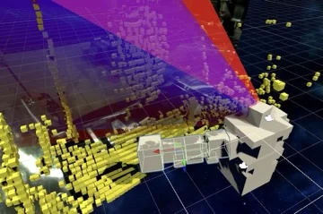
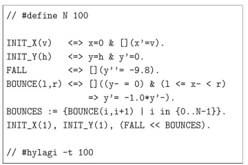

Takafumi Horiuchi (Design Engineer)
我們設計 AI 所設計的。
自主專案
過往學術研究
-

關於人與機器人互動設計的碩士論文 （2021年7月） 將操作者的「是否在看」轉換為機器人可以動作的條件。提出並實現了一種將人的認知狀態納入安全控制、在無需事前目標登錄的情況下防止碰撞的機制。 -

關於約束型程式設計的畢業論文 （2019年6月） 在模擬過程中，判斷出永遠不可能成立的條件，並將其從探索中排除。減少計算量而不改變結果，將評估模型的執行時間縮短了約一半。 - Smart Codesign VR (2021年2月) 碩士期間的專案。記錄正在籌備中。
- Design Studio (2019年–2020年) 碩士期間的專案。記錄正在籌備中。
- Motion Analysis of the Piano Action (2020年1月) 碩士期間的專案。記錄正在籌備中。
關於「設計」，我現在的想法
AI 能夠在給定的條件下生成多樣的內容。但真正決定什麼能夠被生成的，是交給它的那個設計空間。目的、價值、優先順序、約束、禁止事項、評判結果的標準——這些劃定了邊界，AI 在邊界之內探索。我們設計的是這個空間本身，而不是某一件成果；我把這種做法稱為「約束型設計」。約束是為了留住可能性，而不是關閉它們；最終以什麼形態面世，仍然由我們決定——這需要判斷形態的眼光。設計出空間，再從中選定一個形態，並把它做到底。同時承擔這兩件事，在我的理解裡，就是 AI 已經能夠生成的時代中設計師的工作。